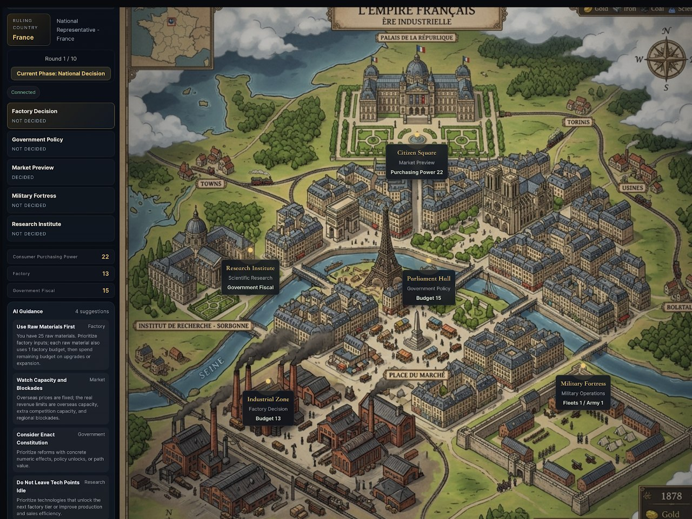
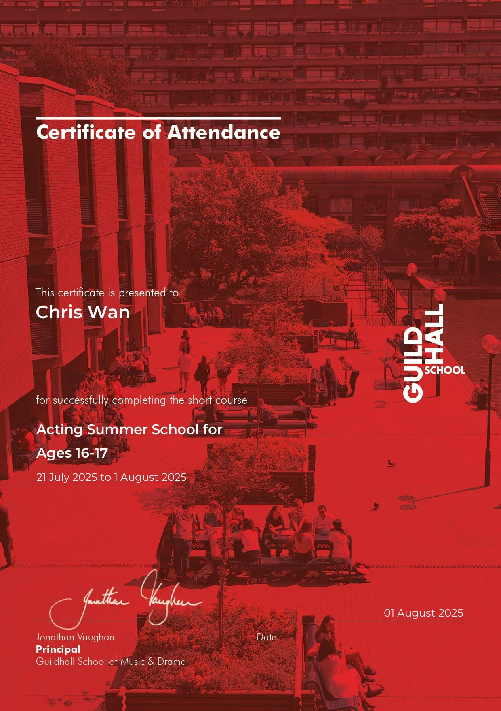
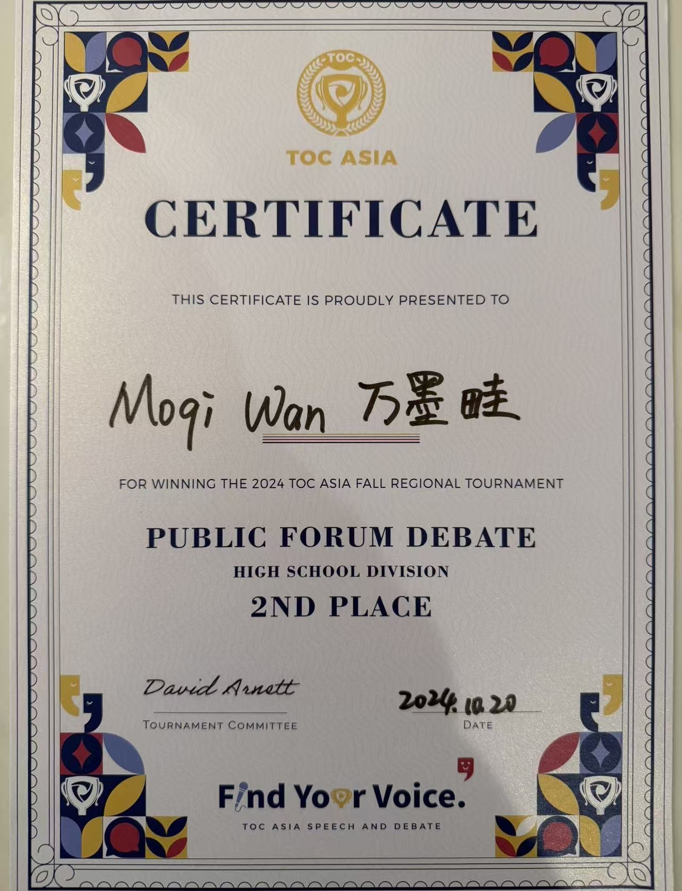

Gaming in History
Many people treat history like expired milk. It smells like memorization, tastes like dates, and feels like something that happened to other people in other centuries who are now safely dead. I have always had a habit of approaching serious problems sideways. So instead of giving speeches about why history is “important,” I built this game.
My focus is 19th-century Europe: industrialization and imperialism. I wanted players to feel how factories, colonies, and markets were entangled, without making them read a chapter first. I spent weeks studying strategy games like Victoria 3 and Twilight Struggle, trying to understand how complex systems could feel playable.


I structured the game around three branches: economic, military, and political. At first, they seemed equal. But as I tested mechanics, the economy kept taking over. Military expansion only made sense if it opened markets. Political reforms only mattered if they stabilized production. War turned into a mathematical decision. The more I explored, the more I found that the design mirrors the reality. Imperialism was often less about flags and more about factories.
I don’t think history is dead. I think it’s misunderstood. In my community, the challenge is convincing people that the past is not a graveyard. My answer is to hand them dice and let them discover that the past is still running the game.
The Game — a playable 19th-century Europe

 Click and Play
Click and PlayDrama and Acting Experiences
My earliest musical was A Little Princess at age 14. Cast in an ensemble role, I was still new to stage movement and blocking. Next I joined the musical FAME. I devoted entire weekends to rehearsing lines, choreography and vocal parts. I earned my first featured scene, though I was not yet trusted with a full solo vocal number. After 4 cumulative years of theatre practice, I took part in Showcase, a production drawing scenes and songs from multiple well-known musicals.


Drawing on my interest in dramatic irony and dark satire, I was cast as Patrick Bateman from American Psycho. This was my first official solo piece, combining both monologue and song. The character is built on sarcasm, serving as a scathing critique of 1980s Wall Street materialism.

In the summer of 2025, I attended Guildhall School of Music and Drama in London, where I immersed myself in professional-level actor training. I took part in acting workshops, scene studies and group rehearsals.
Beyond formal musicals, I regularly performed in my school’s annual haunted-house events. I portrayed a range of characters including zombies, military generals and journalists for these immersive campus shows.
All these roles taught me that performance is more than memorizing lines and dance moves. It demands sustained persistence, close textual analysis of characters, and tight collaboration within a large creative ensemble. This section collects both my onstage triumphs and my early awkward missteps.
Greek Mythology through EPIC
I have long been fascinated by the drama, tragedy and layered human conflicts inside Homer’s epics. Classic written retellings can feel distant and dry for modern viewers. Inspired by EPIC: The Musical, a popular fan-made musical retelling of Homer’s Odyssey, I set out to bring these ancient stories to life visually.
My builds include the city of Troy and the Trojan Horse, alongside other landscapes from the Homeric epics. Using these hand-constructed virtual sets, I recorded in-game cinematics, paired footage with audio from the musical, and edited short interpretive videos.
Find Your Voice — Debate
Debate isn’t about winning the opposition. It’s about winning the people listening.
It is one thing to fight for first place. It is far harder to keep showing up when you repeatedly finish second. I learned that lesson through competitive public-forum debate.
I entered debate confident in my ability to construct sharp arguments. I enjoyed the rush of clashing ideas and took pride in dismantling my opponents’ logic. Round after round, I could win individual exchanges; yet I kept walking away with second-place finishes. After tournaments, during those quiet moments when competitors shook hands across the table, I would often hear the same refrain: “You won the argument, but you lost the round.”
Slowly, I began to recognize my blind spot. I had spent so much energy debating the person across from me that I had forgotten whom I was really trying to persuade: the judge. Debate was not simply about defeating an opponent; it was about reaching a human audience. Winning every logical skirmish meant little if I failed to meet listeners where they were.
That realization reshaped the way I approached every aspect of my work. I stopped seeing debate as purely intellectual combat. Instead, it became an exercise in perspective-taking: learning how different people absorb ideas, how stories resonate differently with different listeners, and how to frame complex material so that it can truly be heard.
This shift in mindset carried into my other creative projects. Whether I was performing in a musical, designing a history-themed board game, or editing documentary footage, I found myself asking the same question: Who is my audience, and what will help them genuinely engage with this idea?
I still hold multiple tournament awards from TOC-Asia and WSDA, including second-place finishes and Outstanding Speaker honors. But the most lasting reward was not the trophies. Debate taught me that persuasion is not about being the cleverest person in the room. It is about listening first, and creating space for other people’s points of view.

